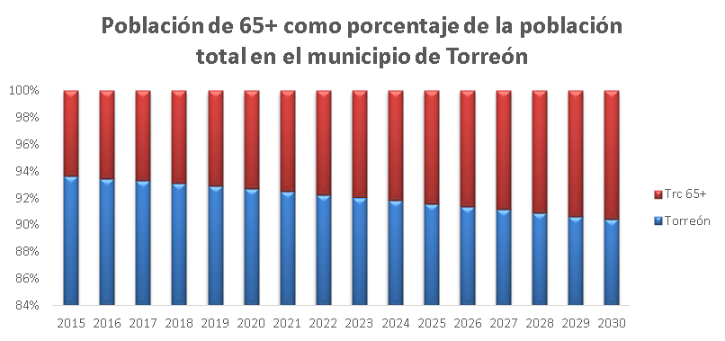
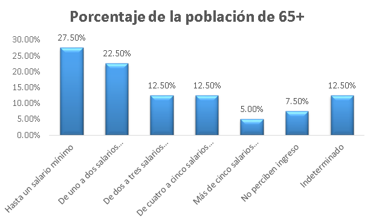

Actualmente el grupo de edad de 65 años y más en Torreón es de 48 mil 399 personas y representa el 7% de la población. Sin embargo, de acuerdo a las proyecciones de la CONAPO en los próximos 15 años este grupo crecerá a una tasa promedio de 4%, por lo tanto para 2030 los adultos mayores representarán más del 10% del total de habitantes.
Éste es uno de los grupos vulnerables que demandan una mayor atención y cobertura en el municipio, pues aunque existen espacios como: la Casa del Anciano Samuel Silva y el Hogar Miguel Ángel Gabriel; no hay infraestructura suficiente para este sector de la población.
Recientemente el Instituto Municipal de Planeación y Competitividad de Torreón (IMPLAN) presentó una "Evaluación del Impacto Social y Urbano de Ciudad DIF", obra que actualmente construye el Municipio en un espacio ubicado detrás del Bosque Urbano.
En su diagnóstico, el IMPLAN detectó que el actual crecimiento de la ciudad, demanda un aumento en la infraestructura que permita la integración social de aquellos grupos vulnerables que requieren asistencia por parte de la administración pública: Adultos mayores en abandono, Damnificados en contingencia, Población con pobreza alimentaria, Personas en Situación de Calle y Migrantes en Tránsito.
En el caso de los adultos mayores, se observa que en Torreón 27% de ellos tiene ingresos de hasta un salario mínimo y 7.5% no percibe ningún ingreso. Esto quiere decir que actualmente hay 13,309 adultos mayores con ingresos de hasta 2,100 pesos mensuales y 3,629 no perciben ningún ingreso.
Hasta el momento el DIF brinda asistencia a domicilio a 72 adultos mayores, brindándoles comidas diarias, despensas semanales y quincenales, brigadas de higiene personal, limpieza del hogar y atención médica. Asimismo se cuenta con el apoyo de una red vecinos que están al pendiente de ellos en casos de emergencia. Además reciben apoyo asistencial con muletas, lentes, bastones, sillas de ruedas, prótesis, etc.
Con el proyecto Ciudad DIF, que contempla la creación del Albergue AMA (Adultos Mayores en Abandono), se podrá albergar hasta 100 adultos, quienes recibirán atención médica inmediata, alimentación balanceada y asistencia en su higiene personal diaria con especialistas médicos. No sólo se aumentará el número de beneficiados, sino que se les otorgarán mejores servicios buscando elevar su calidad de vida, ahorro para la red de vecinos y ahorro de combustible evitando traslados.
Crece población de migrantes
Por otro lado, en los primeros seis meses de este año se duplicó la cantidad de migrantes que pasaron por Torreón en 2015. En los diferentes albergues se recibió un total de 4,382 migrantes el año pasado y se tiene información de que entre 10 y 15% de los migrantes tiene planes de quedarse un tiempo en la ciudad.
Hasta ahora el albergue del DIF ha sido temporal. Abre cinco meses al año y tiene un promedio diario de 35 migrantes con una rotación de 17 días. A estas personas se les ofrece atención médica, tres comidas al día, apoyo asistencial. A quienes no cuentan con papeles se les ayuda a tramitarlos de forma gratuita, por ejemplo el acta de nacimiento, y se les apoya para acercarlos a su destino.
En el municipio existen otros albergues que ofrecen los mismos servicios: la Casa del Peregrino, Fundación Adulam, Fundación para la Educación y Casa Generosa, entre otros.
Sin embargo, la mayoría de estos lugares tienen horarios limitados y tienen que trasladar a los migrantes a albergues permanentes para que puedan pasar la noche. El Albergue Permanente que se instalará en Ciudad DIF, tendrá capacidad de atender a cien personas diarias, con alimentación, con atención médica inmediata y mano de obra especializada.
Los otros grupos vulnerables que atenderá Ciudad DIF son las personas con discapacidad, que representan el 4.5% de la población y las personas en situación de calle.
La edificación se integrará de: oficinas administrativas, albergue para adultos mayores en abandono, albergue permanente y banco de donativos.
En la evaluación del proyecto, el IMPLAN ha recomendado que la construcción cuente con accesibilidad universal para discapacitados, que se cuente con suficientes líneas de transporte de la Ruta Rosa y dotar de infraestructura peatonal y ciclista suficiente al lugar.


Indicadores Población Vulnerable en Torreón:
- 17.77% de la población del municipio tiene rezago alimentario, 7.12% son adultos mayores y hay alrededor de 4691 migrantes.
- De acuerdo con el CONEVAL, 26.80% de la población vive en pobreza, 2.84% en pobreza extrema y 24% en pobreza moderada.
- En cuanto a la población de adultos mayores, de acuerdo con el INEGI viven Torreón 48,399 personas mayores de 65 años.
- De ellos, 21,622 son hombres y 26,777 son mujeres.
- La población con discapacidad es de 4.5%.
Beneficios del Albergue de Adultos Mayores
- Actualmente hay 72 beneficiarios a domicilio.
- Habrá 100 beneficiarios permanentes.
- Aumento en la calidad de vida de los beneficiarios.
- Disminución en las emisiones de CO2 y efecto invernadero.
- Ahorro en las comunidades.